맥딜리버리 주문하러 가기

01. 원재료 준비와 가공
건강한 식재료가 만들어지는 원재료부터 알아볼까요?
원재료 공급사에서는 좋은 재료를 준비하기 위해 엄격한 기준으로
원재료 수급 및 가공 과정을 관리하고 있습니다.
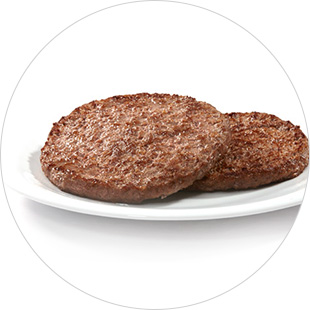
쇠고기 이력번호로 꼼꼼하게 관리되는
호주, 뉴질랜드산 쇠고기
맥도날드 버거 패티는 방부제를 사용하지 않으며, 식약처 등 정부에서 인증한
안전한 재료를 사용합니다. 맥도날드 쇠고기 패티는 100% 호주 및 뉴질랜드의
순 쇠고기로 만듭니다. ‘쇠고기 이력번호’를 통해 쇠고기가 어느 농장에서 생산이 되고,
어떠한 경로를 통하여 유통이 되는지를 철저하게 확인하고 있으며,
식품 안전 기준에 맞는 쇠고기만을 사용하기 위하여 만전을 가하고 있습니다.
안전한 재료를 사용합니다. 맥도날드 쇠고기 패티는 100% 호주 및 뉴질랜드의
순 쇠고기로 만듭니다. ‘쇠고기 이력번호’를 통해 쇠고기가 어느 농장에서 생산이 되고,
어떠한 경로를 통하여 유통이 되는지를 철저하게 확인하고 있으며,
식품 안전 기준에 맞는 쇠고기만을 사용하기 위하여 만전을 가하고 있습니다.
* 수입쇠고기유통이력관리시스템 사이트에서 이력번호를 조회하면 쇠고기의 세부 정보 (수출국 도축장, 가공장, 수출업체 및 도축, 수입일자 등)를
확인할 수 있습니다.
확인할 수 있습니다.
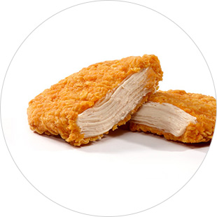
신선하고 안전한 재료로
엄선하여 만든 치킨 패티
맥도날드 버거 패티는 방부제를 사용하지 않으며,
식약처 등 정부에서 인증한 안전한 재료를 사용합니다.
맥스파이시 상하이 버거에는 국내산 통 닭가슴살을 사용합니다.
식약처 등 정부에서 인증한 안전한 재료를 사용합니다.
맥스파이시 상하이 버거에는 국내산 통 닭가슴살을 사용합니다.
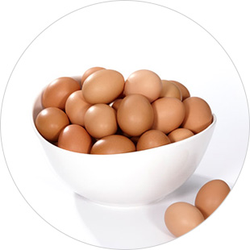
우수한 품질로 7년 연속 축산물품평가원의 상을 수상한
1+등급 계란
축산물품질평가원에서 7년 연속 최우수상 및 우수상을 수상한 업체로부터 공급받은
1+등급 국내산 계란을 사용합니다. 표면 세척과 UV 살균 등 꼼꼼한 위생 처리를 거친 뒤, 레스토랑에서 조리될 때까지 7̊C 이하로 냉장 보관되어 최상의 신선함을 자랑합니다.
1+등급 국내산 계란을 사용합니다. 표면 세척과 UV 살균 등 꼼꼼한 위생 처리를 거친 뒤, 레스토랑에서 조리될 때까지 7̊C 이하로 냉장 보관되어 최상의 신선함을 자랑합니다.
* 2012, 2013, 2014, 2016년 최우수상, 2011. 2015, 2017년 우수상 수상
(자연 재해 등 불가피한 경우가 발생될 경우, 수급 업체가 변동 될 수 있습니다.)
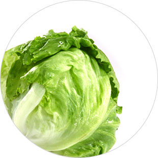
매일유업, 신세계 푸드, 한경 등 HACCP 인증 제조사*에서 공급하는
신선한 양상추
신선한 양상추
농지의 물은 깨끗한지, 토양의 영양분은 풍부한지 농지 주위에
오염 요소는 없는지, 양상추가 자라는 농장부터 꼼꼼히 확인합니다.
수확된 양상추는 3번 이상 꼼꼼하게 세척하며, 신선함을 유지하기 위해 진공으로
포장하여, 가공한 지 2일 이내 배송센터로 배송됩니다.
오염 요소는 없는지, 양상추가 자라는 농장부터 꼼꼼히 확인합니다.
수확된 양상추는 3번 이상 꼼꼼하게 세척하며, 신선함을 유지하기 위해 진공으로
포장하여, 가공한 지 2일 이내 배송센터로 배송됩니다.
* 자연 재해 등 불가피한 경우가 발생될 경우, 수급 업체가 변동될 수 있습니다.
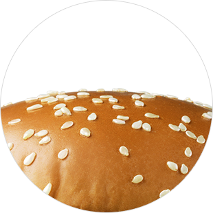
매일 구워 배송 받는 햄버거 빵
맥도날드에서 사용하는 햄버거 빵은 국제식품안전협회(GFSI*)의 식품안전시스템
규격 인증을 받은 공장에서, 60년 이상의 햄버거 빵 제조 기술을 바탕으로 생산된
우수한 품질의 제품입니다.
신선한 햄버거 빵을 고객들께 제공하게 위해, 하루 수요량에 맞춰 국내에서 직접 구운
햄버거 빵을 사용합니다. 레스토랑으로 배송을 받을 때는 외부 오염을 차단한
전용 탑차를 이용하여 신선도를 유지합니다.
규격 인증을 받은 공장에서, 60년 이상의 햄버거 빵 제조 기술을 바탕으로 생산된
우수한 품질의 제품입니다.
신선한 햄버거 빵을 고객들께 제공하게 위해, 하루 수요량에 맞춰 국내에서 직접 구운
햄버거 빵을 사용합니다. 레스토랑으로 배송을 받을 때는 외부 오염을 차단한
전용 탑차를 이용하여 신선도를 유지합니다.
* GFSI (Global Food Safety Initiative) : 소비자에게 안전한 식품의 공급을 보장하기 위해, 식품 안전 관리 시스템의 지속적인 개선을 목표로 설립된
국제식품안전협회입니다.
맥도날드에서 사용하는 햄버거 빵은 GFIS가 공인하는 식품안전경영시스템 (FSSC-22000)을 인증 받은 공장에서 생산되고 있습니다.
02. 재료 보관부터 배송까지
깐깐한 원재료 준비 및 가공 과정만큼 보관과 배송도 중요하겠죠?
배송 업체에서는 재료의 신선도와 안전성을 유지하기 위해 철저하게 품질을 검사하여 보관하고 배송합니다.
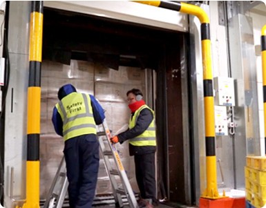
최적의 온도와 보안 상태를 확인하는
검수 및 하역 단계
깐깐한 관리를 통해 선별되고 가공된 원재료는 최적화된 온도에서 보관된 상태로
원재료 컨테이너에 봉인되어 물류 창고에 도착합니다. 물류업체에서 보안 확인을
마친 후, 트럭과 공장 사이의 공간이 한치의 틈도 없이 맞물리도록 도킹 작업을
수행, 최적의 온도를 유지하도록 한 후 재료를 하역합니다.
하역과정에서 재료의 온도를 확인하고 검수하는 과정을 거친 후에, 품질 검사증을 붙여 최적의 상태로 보관될 수 있도록 합니다.
원재료 컨테이너에 봉인되어 물류 창고에 도착합니다. 물류업체에서 보안 확인을
마친 후, 트럭과 공장 사이의 공간이 한치의 틈도 없이 맞물리도록 도킹 작업을
수행, 최적의 온도를 유지하도록 한 후 재료를 하역합니다.
하역과정에서 재료의 온도를 확인하고 검수하는 과정을 거친 후에, 품질 검사증을 붙여 최적의 상태로 보관될 수 있도록 합니다.
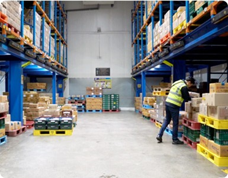
안전과 청결은 기본, 보관 및 배송 단계
검수가 완료된 재료들은 레스토랑으로 이동되기 전까지 재료의 종류, 레스토랑
배송 날짜 등에 따라 분류하여 안전하고 깨끗하게 보관됩니다. 이 때, 재료들의
신선한 보관을 위해 최적의 온도 상태를 유지합니다.
재료의 유효기간과 상태를 다시 한 번 점검 후, 배송 차량이 보관 창고에
한 치의 틈도 없이 도킹되면, 재료들을 차량에 실어 목적지 레스토랑으로 출발하게 됩니다.
배송 날짜 등에 따라 분류하여 안전하고 깨끗하게 보관됩니다. 이 때, 재료들의
신선한 보관을 위해 최적의 온도 상태를 유지합니다.
재료의 유효기간과 상태를 다시 한 번 점검 후, 배송 차량이 보관 창고에
한 치의 틈도 없이 도킹되면, 재료들을 차량에 실어 목적지 레스토랑으로 출발하게 됩니다.
03. 레스토랑에서의 노력
레스토랑에 도착한 식재료는 어떻게 관리될까요?
레스토랑으로 배송된 식재료가 음식으로 조리되어 고객에게 전달되는 순간까지 맥도날드의 노력은 멈추지 않습니다.
철저한 재료 관리
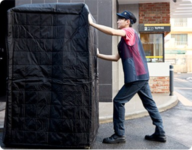
냉장/냉동고로 식재료를 입고할 때
적정 온도 유지는 필수
배송된 재료가 바로 냉장/냉동실로 이동될 수 있도록 사전에 필요한 공간을 확보해 둡니다.
그리고 항온 담요와 방수포를 덮어 식재료 온도를 유지하며, 바닥에 닿지 않도록 트레이를 사용하여
냉장/냉동고로 입고시킵니다.
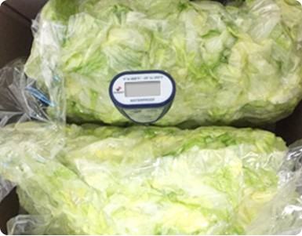
샘플 검수를 통해 식재료의 신선한 상태를 점검
식재료가 배송되면 기준에 미달하는 식재료는 없는지 냉동/냉장 각 재료 중 일부 박스를 샘플로 뜯어 확인하고, 문제가 있을 경우 폐기를 위해 반품 처리 합니다.
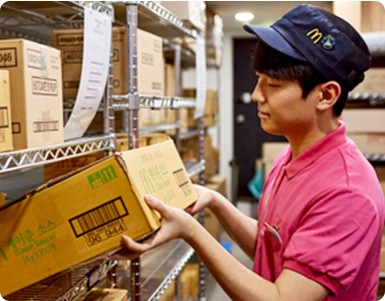
먼저 들어온 제품을 먼저 사용하고
냉장/냉동고의 온도를 철저히 유지
냉장/냉동고의 온도를 철저히 유지
선입선출이라는 말을 아시나요? 먼저 들어온 식재료부터 들어온 순서에 맞게 사용될 수 있도록 보관·관리하며, 재료 박스간의 적정 간격을 유지하여 온도가 잘 유지될 수 있도록 보관합니다.
* 2012, 2013, 2014, 2016년 최우수상, 2011. 2015, 2017년 우수상 수상
(자연 재해 등 불가피한 경우가 발생될 경우, 수급 업체가 변동 될 수 있습니다.)
조리환경 관리
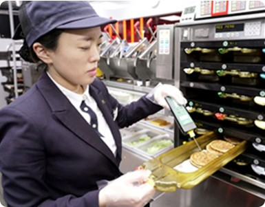
매일 첫 제품이 제공되지 전에
조리된 제품의 온도를 체크
매일 첫 제품이 제공되기 전 패티의 온도를 체크하여 식품 안전 온도를 유지하는지 확인합니다.
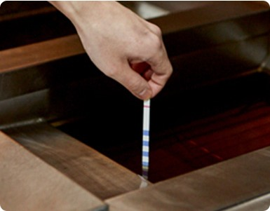
식약처 기준보다 더 염격한 산가기준 적용
매일 레스토랑 기름의 산가를 측정하여 기준을 초과하는 경우 즉시 교체하고 있습니다. 국내 식품 위생 법률에서 정한 3.0의 산가 기준보다 더 엄격한 2.5의 산가 기준을 적용합니다.
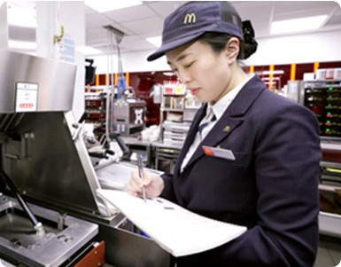
매일 식품 안전사항을 체크하고 관리
모든 레스토랑에서는 매일 식품 안전사항을 체크하여 철저히 품질 관리를 합니다.
조리과정 관리
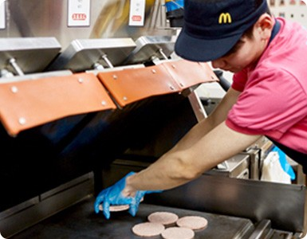
패티의 종류에 따라 적정 온도로
조리되는 오토 쿠킹 모드
패티는 그릴이라는 장비를 통해 자동으로 구워집니다. 오토 쿠킹 모드를 누르면 정해진 조리 시간에
따라 자동으로 조리되며, 정해진 시간이 종료되면 자동으로 상판이 올라가며 조리가 완료됩니다.
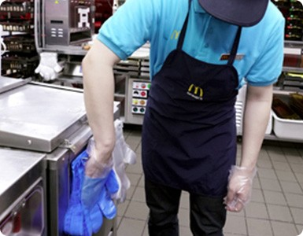
교차 오염 방지를 위한 일회용 장갑 사용
교차 오염을 방자하기 위해 조리되지 않은 식품을 만질 때는 파란 장갑을,
조리된 식품이나 조리 도구를 만질 때는 흰 장갑을 사용합니다.
한번 사용한 장갑은 바로 폐기하고, 새 장갑으로 교체하여 사용합니다.
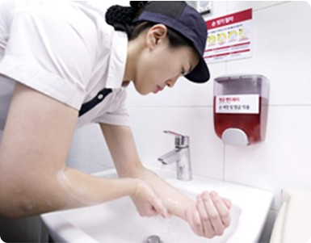
깨끗하고 안전한 제품을
제공하기 위해 준비하는 크루
레스토랑 주방에서는 30분마다 한번씩 손 씻기 타이머가 울립니다.
주방에서 근무하는 모든 직원들은 30분마다 한 번씩 손부터 아래팔까지 손을 씻습니다.
청결한 유니폼 착용 등 개인 위생에도 만전을 기합니다.
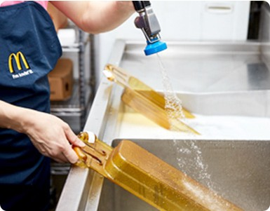
4시간 경마다 세척하여 사용하는 조리 도구
깨끗한 조리 환경을 위해, 레스토랑 직원들은 4시간 경마다 한 번씩
조리 도구를 세척하여 청결하게 사용하고 있습니다.
고객만족을 위한 노력
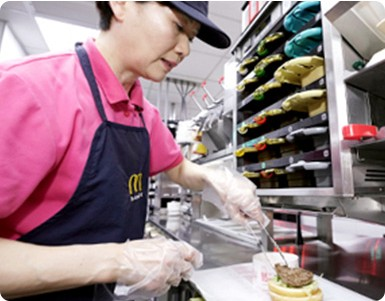
주문이 들어옴과 동시에 음식을
만드는 ‘메이드 포 유’ 시스템
맥도날드는 음식을 미리 만들어 놓지 않고, 고객 주문 접수와 동시에 음식을 만들어 갓 조리된 신선한 음식만을 제공하는
‘메이드 포 유(Made for You)’ 시스템을 적용하고 있습니다.
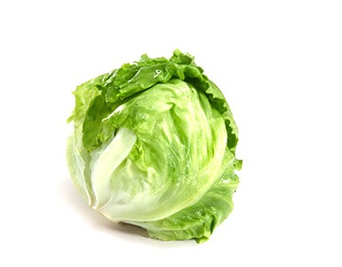
고객의견을 반영한 제품 구성 및 함량 변경
위생을 위해 쉬레더로 변경한 양상추의 함량이 적게 느껴진다는
고객 의견을 반영하여 일부 메뉴의 슈레더 양상추 함량이 30g씩 늘어났습니다.
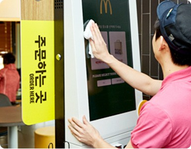
고객이 주문하는 공간도 언제나 깨끗하게 유지
고객이 주문을 하는 카운터와 디지털 키오스트 공간도 언제나 기분 좋게 사용하실 수 있도록 깨끗이 유지합니다.
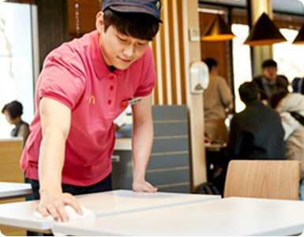
고객이 레스토랑을 나가는 순간까지 깨끗하게
고객이 음식을 드시는 테이블은 물론, 휴지통과 화장실까지 청결하게 유지될 수 있도록 노력합니다.